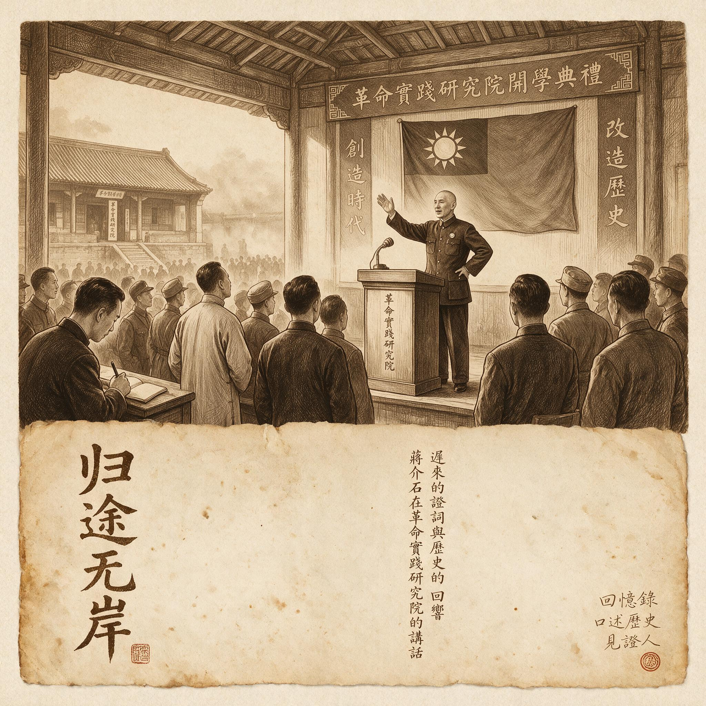

第 29 章
迟来的证词与历史的回响
昆明翠湖公园的茶摊上，赵大有每天下午三点准时出现。他要一杯最便宜的花茶，坐在靠湖的竹椅上，看水鸟从水面起飞。茶摊老板知道他姓赵，从不多话，喝完茶付钱走人。1983年秋天的一个下午，

蒋介石在革命实践研究院讲话
AI 生成插图，非史实影像。
一个年轻人坐到他旁边，问起他手腕上那道从腕骨延伸到肘弯的旧伤疤。老人看了他一眼，没有回答。年轻人没有走，第二天又来。第三天，老人开口了。他说的第一句话不是关于伤疤，而是关于野人山。
同一年的台北，一位退役少将在荣民之家的走廊里拦住了前来采访的报社记者。他已经等了三个月，等一个愿意听他说话的人。记者原本是来采访荣民之家伙食问题的，却在走廊里被拉住了袖子。少将说，他在1944年松山战役期间担任某师参谋，有些事如果再不讲，就永远没人知道了。他从上衣口袋里掏出一沓折叠整齐的稿纸，纸上密密麻麻写满了字。这是他花了两年时间写下的回忆录，没有一个字曾公开发表。
两个场景，发生在同一年的不同空间里。赵大有在昆明讲的是饥饿——部队断粮后士兵们如何煮食皮带，如何在密林中辨认可食用的野草，如何在行军途中看着同伴因误食毒草而倒下。台北那位少将写的是松山——日军地下堡垒的构造、中国军队每推进一米付出的伤亡代价，以及一份他始终认为不合理的作战命令。他们讲述的内容不同，但讲述的动作指向同一件事：一段被封存了近四十年的历史，正在从沉默中浮出。
这场浮出不是突然发生的。它的条件是一点一点积累起来的，积累的过程跨越了整个1980年代，涉及三种不同力量的交汇。
第一种力量来自政策缝隙。1978年12月中共十一届三中全会之后，文史资料工作逐步恢复。各级政协的文史委员会重新开始征集稿件，征集范围从革命史扩展到更广泛的近代史领域。这个扩展在当时并不引人注目——它只是会议文件中的一句话，出现在一长串工作部署的中间位置。但对于那些保存着远征军记忆的人来说，这句话意味着一种可能性的出现：不属于革命叙事主线的经历，也许可以被记录下来了。
可能性不等于现实。远征军历史在当时的处境仍然微妙。它涉及国民党军队——这是一个政治标签；涉及美军合作——这涉及“帝国主义”这个敏感词；涉及一段由“旧政权”指挥的涉外作战——这同时触碰了内外两条红线。三个要素叠加在一起，意味着任何关于远征军的公开叙述都必须穿越一片雷区。
但雷区并非毫无缝隙。地方文史资料作为“内部发行”的出版物，审查标准相对宽松。一些县级政协的文史委员会开始采集本地籍贯的远征军老兵口述。他们的工作方式很原始：一辆自行车，一个笔记本，一瓶墨水。采集者骑着自行车下乡，找到老兵，坐在院子里或者堂屋里，听他们讲，边听边记。记录稿回到办公室后用复写纸誊写几份，一份存档，一份上报，一份留着备用。
这些口述记录的质量参差不齐。有的采集者缺乏军事常识，把“师”和“旅”搞混，把“迫击炮”写成“炮击迫”。有的人按照当时的政治惯性，在记录中自动删去了涉及国民政府的职务和番号，只留下“在缅甸打仗”这样模糊的表述。还有的人在记录完成后，会加上一段评价性文字，指出讲述者存在“旧军队思想残余”或“对新社会认识不足”。但无论如何，这些文字留下了第一批来自亲历者的证词。
1984年，云南省政协文史资料委员会编辑出版了《云南文史资料选辑》第二十辑，其中收录了几篇关于滇西抗战的回忆文章。这是远征军题材在省级文史刊物上的较早亮相。文章的作者大多是当年在滇西参加反攻的中下级军官，他们在文中记述了松山战役、腾冲战役的经过。文字的语调克制而务实，主要聚焦于战术细节和战斗过程，极少涉及政治评价。
其中一篇文章提到了松山主峰爆破的经过：工兵们在日军坑道下方挖掘了填药室，填入炸药，引爆后整个山头被掀掉。作者写道，松山顶峰的地形在爆炸后永久改变了。他没有写的是，那些炸药中有多少是美援物资，也没有写史迪威在这件事上的角色。这些省略不是疏忽，而是一种精确的自我审查——作者知道什么能写，什么不能写。
同年，台湾的情况也在发生变化，虽然方向不同，但同样为远征军记忆的公开创造了条件。台湾仍处于戒严时期，但社会氛围已经与1950年代大不相同。经济发展催生了一个规模庞大的中产阶级，他们对历史真相的需求不再满足于官方宣传的简单叙事。一些退伍军人开始在报纸副刊上发表回忆文章，记述当年在缅甸作战的经历。这些文章通常以个人视角展开，回避了对整体战略和指挥体系的评价，但细节的丰富程度远超官方战史。
台湾国防部史政编译局在这一时期也加快了战史编纂工作。他们掌握着远征军时期的大量原始档案——作战命令、电报往来、兵力统计、后勤报表。这些文件在撤退时被带到台湾，堆放在史政编译局的档案库里，几十年来很少有人翻阅。1980年代中期，随着档案管理人员的更替和学术研究需求的增长，这些档案开始被有限度地开放给研究者使用。
第一批接触到这些档案的研究者发现，档案中记录的许多事实与官方公开战史的叙述存在出入。例如，官方战史强调指挥系统的统一和协调，但档案中的电报显示，远征军长官部与驻印军总指挥部之间、重庆军令部与前线司令部之间的矛盾远比公开叙述所承认的要尖锐。这些发现暂时还停留在学术圈内部，没有进入公众视野，但它们为后来的历史修正提供了基础。
这里需要追问第一个问题：为什么大陆和台湾几乎在同一时期出现了政策松动？答案不在于双方对远征军历史本身的重视，而在于各自内部更大的驱动力。在大陆，驱动力是改革开放后整个社会对历史真相的普遍渴求，远征军只是这股潮流中一个不太显眼的支流。
在台湾，驱动力是本土意识的兴起和对戒严体制下官方历史叙述的整体性质疑，远征军作为“抗战史”的一部分被重新审视。在这两种情况下，远征军历史的有限公开都是更大历史进程的副产品，而非目的本身。这意味着松动是真实的，但也是不可靠的——它不是基于对这段历史的重新评价，而是被更大的潮流裹挟进来的。当潮流方向改变，松动可能随时停止。
第二种力量来自国际学术界。1970年代末到1980年代，英美两国的军事史学者开始系统地研究第二次世界大战的缅甸战场。他们的研究动力部分来自学术兴趣，部分来自冷战背景下对亚洲战场的重新评估。这些学者拥有中国学者不具备的条件：他们可以自由查阅英美两国的军事档案，可以采访退役的英美军官，可以跨越意识形态的界限进行跨国比较研究。
1978年，英国军事史学者路易斯·艾伦出版了《缅甸：最长的战争》一书。艾伦在书中大量使用了英军和日军的原始档案，重建了缅甸战役的全过程。他在书中对中国远征军的评价引起了注意。他指出，中国士兵在缅甸表现出的坚韧和忍耐力超出了大多数英国军官的预期，问题在于他们的后勤系统几乎完全依赖外部支援，一旦这条支援线断裂，战斗力就会急剧下降。这个判断与史迪威日记中的评价如出一辙，也与日军《战史丛书》中的观察吻合。
1982年，美国历史学者芭芭拉·塔奇曼出版了《史迪威与美国在华经验》一书，获得普利策奖。塔奇曼以史迪威的个人经历为主线，详细记述了中美英三国在缅甸战场上的合作与冲突。她在书中引用了大量史迪威的私人信件和日记，揭示了这位美国将军对中国士兵的高度评价和对中国军队后勤体系的极度失望。塔奇曼写道，史迪威相信如果给中国士兵提供与美国士兵同等的装备和训练，他们将成为世界上最优秀的步兵之一。但史迪威在缅甸的经历也让他认识到，装备和训练恰恰是最难解决的问题——它们涉及整个军事体系的结构性缺陷，不是换一个指挥官或者增加一批物资就能改变的。
这些国际学术著作的出版产生了连锁反应。它们首先在英语世界引起关注，随后被翻译成中文在香港和海外华人社区流传，最后通过各种渠道进入大陆和台湾。对于那些正在试图研究远征军历史的中国学者来说，这些著作提供了宝贵的参考框架和史料线索。他们发现，外国人已经做了他们想做但做不了的事：跨越国界的档案研究，跨越阵营的比较分析。
这里出现了第二个问题：为什么是外国学者率先完成了这些研究？答案指向一个结构性问题：中国学者在本国档案尚未充分开放的情况下，无法进行同等的跨国比较研究。大陆学者看不到台湾的档案，台湾学者看不到大陆的档案，双方都看不到英美日的原始文件。而外国学者不受这些限制。这意味着关于中国远征军的最有影响力的早期学术著作，是由那些站在中国之外的人写成的。他们提出的问题框架——为什么优秀的士兵被糟糕的体系拖累——后来成为中国学者不得不面对的核心议题，但这个议题最初是由外部设定的。
第三种力量来自幸存者个体的生命倒计时。到1980年代中期，远征军老兵群体的平均年龄已经超过六十五岁。他们在抗日战争结束时是二十出头的年轻人，经过四十年的沉默，正在进入生命的最后阶段。每一个冬天的过去都意味着一批人的离去。这种紧迫感不是抽象的——它体现在具体的人身上，体现在那些突然意识到“再不开口就来不及了”的老人身上。
赵大有在翠湖公园开口的那一年，他六十七岁。他的身体还硬朗，但已经目睹了太多战友的去世。每次参加追悼会回来，他都会把那个装着勋章的盒子拿出来看一看，然后又放回去。他后来对采访者说，他不怕死，怕的是那些事跟他一起死掉。台北那位退役少将写回忆录的动机类似。他在荣民之家里看到同期的老兵一个接一个被送进医院，然后一个接一个被送进殡仪馆。他算了一下，当年他们师一起从缅甸回来的人，还活着的不到二十个。他决定写下来，不管有没有人出版。
这种由生命倒计时驱动的讲述冲动，与官方政策松动和国际学术推动形成了三重合力。政策提供了可能性空间，国际研究提供了分析框架和史料参照，而老兵们的开口提供了最直接的一手证词。三种力量缺一不可：没有政策松动，证词无处发表；没有国际研究，证词缺乏解释框架；没有老兵开口，政策和研究都只是空壳。
但三种力量的交汇并不意味着历史真相的自动呈现。证词在进入公共领域的过程中遭遇了新的筛选和包装。
1985年，抗日战争胜利四十周年。这个时间节点为远征军历史的公开提供了一个重要的窗口。大陆方面，中共中央批准举办了一系列纪念活动。虽然活动的主调仍然是中共领导下的敌后抗战，但正面战场的地位得到了比以往更多的承认。在这一年出版的《抗日战争时期国民党正面战场重要战役介绍》一书中，远征军入缅作战被列为重要战役之一。这是远征军在中共官方出版物中获得的较早的正面定位。台湾方面，国防部举办了抗战胜利四十周年学术研讨会，邀请学者和退役将领参加。会上有多篇论文涉及远征军和驻印军的作战经历。这些论文后来结集出版，成为研究远征军历史的重要参考资料。
但纪念活动带来的公开是有限的、受控的。无论是在大陆还是台湾，官方纪念的框架都是既定的。远征军的经历被分别纳入这些框架中，那些不符合框架的部分——中英之间的战略分歧、中美之间的指挥权争夺、基层士兵遭受的不公正待遇——被小心翼翼地回避了。
真正突破框架的，是那些非官方的、个体的努力。1986年夏天，四川成都的一位中学历史教师李正华利用暑假时间，开始了自己的远征军口述采集计划。他的动机很个人化：他的父亲曾经是一名远征军士兵，1944年在滇西阵亡。李正华从小听母亲零星提起父亲的事，但从未见过任何书面记录。他想要知道父亲到底经历了什么。
李正华没有经费，没有单位支持，没有采访介绍信。他靠着一辆自行车和一张从文史资料上抄下来的远征军老兵名单，一个县一个县地跑。他的方法很笨：到了地方先找当地的老人协会或者退伍军人协会，打听有没有从缅甸回来的人。找到了就上门拜访，说明来意，请求对方讲述当年的经历。大多数老兵的反应是谨慎的。他们先要确认李正华的身份——不是干部，不是记者，只是一个中学教师，父亲也是远征军。确认之后，他们会试探性地讲一些不太敏感的内容：行军路线、伙食情况、战友的名字。讲到敏感处——比如长官的命令不合理、友军配合不力、战后遭遇不公——他们会停下来，看看李正华的反应，然后决定要不要继续。
李正华在三个暑假里采访了四十七位老兵，记录下了大约二十万字的原始口述材料。这些材料中包含了大量此前从未见诸文字的信息。一位姓王的老人详细描述了野人山撤退时的情况：部队断粮后，士兵们开始吃皮带和皮鞋。先把皮带切成小段，放在水里煮，煮软了捞出来嚼。嚼不动就咽下去，胃里像塞了一块石头。后来皮带吃完了，有人开始吃树皮，有人吃不知名的野草。吃了毒草的人脸部肿胀，口吐白沫，在行军途中倒下就再也没有起来。
另一位姓陈的老人讲述了在兰姆伽训练营的经历。他说刚到兰姆伽时，士兵们的身体状况极差。美军提供的伙食标准是每人每天四千卡路里热量，包括肉类、蔬菜、牛奶和面包。很多士兵从来没有吃过这样的食物。第一个月，大家的体重平均增加了十斤。第二个月，训练强度加上去之后，身体才开始真正变强壮。老人的原话是，那时候才明白，以前不是他们不会打仗，是根本没有力气打仗。
还有一位姓刘的老人回忆了战后在加尔各答港口的遭遇。他说战争结束后，部队奉命在港口等待船只回国。等了四十多天，船来了又走了，每次都轮不到他们。港口的管理人员说没有接到关于他们的安排。他们睡在码头仓库里，每天靠红十字会提供的救济食品维持生命。有人生病了没有药，有人精神崩溃了半夜哭喊。他说，那时候觉得，他们打了胜仗，却像一群没人要的货物。
这些口述材料在采集完成后，面临的下一个问题是公开。李正华尝试投稿给几家历史刊物，都因为选题敏感而被退稿。他转而联系出版社，希望在地方文史资料系列中出一本小册子。出版社的编辑看了稿子后表示为难：里面有些内容太具体了，具体到可以看出是哪支部队、哪个长官指挥的。编辑建议他把番号和地名模糊处理一下。李正华最终自费印刷了五百本小册子，在朋友和同行之间分发。小册子的封面是白底黑字，没有任何装饰图案，印着《远征军老兵口述实录》几个字。这本朴素的小册子在历史爱好者圈子里引起了关注，一些人开始效仿李正华的做法，在自己的家乡寻找远征军老兵进行采访。
台湾也出现了类似的民间采集行动。1987年7月，台湾解除了长达三十八年的戒严令。解严后，社会言论空间迅速扩大，长期被压制的话题纷纷浮出水面。退伍军人群体成为推动历史记忆重建的重要力量。一些参加过远征军的老兵开始在荣民之家的刊物上发表回忆文章，讲述当年的作战经历。他们的叙述比官方战史更加个人化，也更加苦涩——不仅写到了战场上的英勇，也写到了战后被遗忘的失落。
一位署名“松山老兵”的作者在《荣民之声》月刊上发表了连载文章《我在松山的七十二天》。文章详细记述了1944年松山战役的惨烈程度：日军据守的地下堡垒构造复杂，火力点布置精密，中国军队每前进一步都要付出巨大的伤亡代价。作者所在的那个连，投入战斗时有一百二十人，打到第三十天时只剩下三十一人还能战斗。连长阵亡了，副连长顶上去；副连长阵亡了，排长顶上去；排长阵亡了，班长顶上去。到最后几天，指挥这个连的是一个入伍不到两年的上等兵。
这篇文章在台湾退伍军人群体中引起了强烈反响。许多老兵写信给编辑部，表示自己也有类似的经历想要讲述。《荣民之声》随后开辟了专栏，连续刊载老兵的回忆文章。这些文章的质量不一，有的文笔流畅、细节准确；有的记忆模糊、时间地点混乱；有的带有明显的情绪化倾向，对某些人事的评价有失公允。但它们共同构成了一个多声部的记忆场域，让远征军的历史从单一的官方叙事中解放出来。
1988年，一部重要的史料集在台湾出版：《抗日战史——缅北滇西作战》。这部书由国防部史政编译局编纂，收录了大量原始档案和作战地图，是迄今为止关于远征军作战过程最详尽的官方史料汇编。虽然编纂者的立场仍然是国民政府的官方立场，但史料本身的价值超越了立场局限。书中收录的各部队作战详报、兵力部署表和后勤补给记录，为后来的研究者提供了扎实的文献基础。
同年，日本防卫厅防卫研究所战史室编纂的《战史丛书·缅甸作战》中译本在香港出版。这部丛书是日本官方编纂的战史，其中的缅甸作战卷详细记录了日军在缅甸战场上的作战计划和实施过程。《战史丛书》中的一些评价令人深思。日军第三十三军参谋辻政信在战后回忆录中写道，中国军队的个人战斗力不容低估，特别是他们在攻坚时表现出的勇敢精神令人印象深刻，但他们的战术协调和后勤保障能力明显不足，这让他们在运动战中处于劣势。这个评价与史迪威日记中的观点高度一致，也印证了斯利姆在《反败为胜》中的判断：中国士兵是优秀的材料，但缺乏现代化的组织框架来充分发挥他们的潜力。
日军战史的公开在中国学术界引起了复杂的反应。一方面，它填补了史料空白，让研究者能够从敌方的角度审视战场态势。另一方面，它提出了一个尖锐的问题：既然中国士兵的个人素质得到了对手的承认，那么导致远征军伤亡惨重、战果有限的原因究竟是什么？
这里需要追问第三个问题：为什么士兵个体的卓越无法转化为体系的改良？答案不在战场上，而在战场之外。远征军的后勤依赖美援，指挥权让渡给史迪威，战后遣返取决于盟国船只的调配——这些都不是士兵个人能够改变的事。它们涉及的是一个国家在工业化水平、军事体制和外交地位上的结构性弱势。士兵可以在松山用血肉之躯攻坚克难，但他们无法改变中国不能自主生产足够弹药这一事实。士兵可以在野人山以惊人的毅力穿越绝境，但他们无法改变撤退命令是在盟军协调失灵后被迫做出这一事实。个体的卓越在体系的缺陷面前，就像一把锋利的刀砍在石头上——刀是好刀，但石头纹丝不动。
1989年之后，大陆的学术环境发生了一些变化。远征军历史研究虽然未被禁止，但推进速度明显放缓。一些正在进行中的口述采集项目被搁置，一些已经完成的书稿被退回修改。公开讨论的空间收窄了。但研究工作并未完全停滞。1990年代初期，几位大陆学者开始尝试从军事社会史的角度研究远征军。他们的研究不同于传统的军事史——后者关注的是战役过程、指挥决策和战术运用，前者则试图回答更根本的问题：这些士兵从哪里来？他们为什么参军？他们在军队中得到了什么样的待遇？他们的家庭在他们出征期间如何生存？他们战后回到了什么样的社会环境中？
这些问题在当时的史学界属于边缘议题。主流的历史研究仍然聚焦于政治史和外交史，对底层士兵的个体遭遇缺乏兴趣。一位试图申请相关课题的学者得到的评审意见是：选题过于微观，缺乏宏观意义。但正是这种“微观”视角，后来被证明是理解远征军悲剧的关键——因为士兵个体的卓越与体系缺陷之间的反差，只有在微观层面才能被真正看见。
1994年，一本名为《大国之魂》的非虚构作品在中国大陆出版，作者邓贤以文学化的笔法记述了远征军的历史。这本书不是严格的学术著作，它的叙事方式带有强烈的文学色彩，对人物心理和场景氛围有大量想象性的描写。但它的出版仍然具有重要意义：它是中国大陆公开出版物中第一本以远征军为主题的单行本著作。《大国之魂》的出版过程并不顺利。书稿先后被多家出版社拒绝，理由包括题材敏感、涉及国民党军队、需要上级审批。最终出版时，编辑对书中的一些表述进行了修改，弱化了对某些历史人物和历史事件的负面评价。尽管如此，这本书还是引起了广泛的读者关注，在出版后的几年里多次重印。
《大国之魂》的成功刺激了出版市场对远征军题材的兴趣。随后几年里，一批相关书籍相继出版：有老兵的回忆录，有学者的研究专著，有纪实文学作家的采访手记。这些书籍的质量良莠不齐，有的建立在扎实的史料基础上，有的则充斥着想象和编造；有的对历史复杂性保持了应有的尊重，有的则将复杂历史简化为煽情故事。
媒体也开始关注远征军题材。1995年是抗日战争胜利五十周年，多家电视台制作了相关的纪录片和专题节目。在大多数节目中，远征军的故事被纳入“全民族抗战”的叙事框架中处理——强调其作为正面战场组成部分的地位，淡化其与中共敌后战场的差异和张力。这种处理方式使得远征军历史得以在主流媒体上公开呈现，但代价是它被抽离了具体的政治和历史语境，变成了一种抽象化的“抗战精神”象征。
那些真正尖锐的问题——为什么中国士兵需要依赖美国提供口粮？为什么指挥权要让渡给一个不会说中文的美国将军？为什么战后这些士兵被遗忘得如此彻底？——在媒体叙事中几乎找不到位置。媒体的逻辑是简化而不是复杂化，是煽情而不是追问。一个老兵在镜头前流泪的画面比一段关于后勤体系的分析更容易获得收视率。
学术界的情况也好不了太多。1990年代的远征军研究虽然取得了进展，但大多数研究仍然停留在军事史框架内。学者们热衷于讨论战役部署的得失、指挥决策的对错、兵力使用的优劣，却很少追问更深层的问题：支撑这些战役部署的制度基础是什么？决定这些指挥决策的权力结构是什么？影响这些兵力使用的资源分配机制是什么？
这里出现了第四个问题：为什么学术界止步于军事史框架，未能追问体系问题？答案部分在于学科惯性——军事史天然关注战役和指挥，社会史的方法尚未充分渗透进来。但更重要的原因在于，追问体系问题会引向对制度本身的质疑。承认中国士兵是世界优秀步兵是一回事——这可以归结为民族自豪感的来源；承认他们所在的体系存在致命缺陷是另一回事——这会引向对体制的反思。前者是安全的，后者是敏感的。学术界的回避不是偶然的，而是一种结构性的自我约束。
1997年香港回归前后，香港出版界对远征军题材表现出浓厚兴趣。由于香港的出版审查制度不同于大陆和台湾，一些在大陆难以出版的内容在香港得以面世。这些出版物通过各种渠道回流到大陆和台湾，为研究者提供了更多的史料和信息。
其中一部引起关注的作品是一位化名“林莽”的作者撰写的《被遗忘的远征》。这本书以大量口述材料为基础，详细记述了远征军基层士兵的经历，特别是战后滞留印缅人员的处境。书中披露了一些此前不为人知的细节：1950年代初期，滞留在缅甸北部的远征军老兵曾经向新中国驻缅甸使馆申请回国，但因为无法提供符合要求的政治证明而被拒绝；
同一时期，台湾方面也以类似理由拒绝了他们的入境申请。这些人在两个中国之间成了无国籍者。《被遗忘的远征》在学术圈内引起了讨论，但它提出的问题没有进入公共视野。
“无国籍者”的命运太过具体，具体到可以用个体的不幸来解释；而“两个中国都不接收”的事实又太过敏感，敏感到大多数媒体选择避而不谈。
1990年代的最后几年里，一个现象变得越来越明显：老兵们正在离去。1998年春天，赵大有在昆明那家医院的仓库里取回了他的勋章。他打开盒子看了看，又合上了。他对陪同他去的人说，这枚勋章证明他打过仗，但它不能证明他为什么打这场仗，也不能证明他打完仗以后过的是什么日子。他把勋章带回家，放进一个旧皮箱里，和那些他从来没有给人看过的照片、信件放在一起。
同年秋天，李正华采访过的四十七位老兵中已经有十一人去世了。他翻看当年的采访笔记，发现有些记录因为当时时间仓促而过于简略，有些关键细节没有追问清楚。他想回去重新采访，但已经来不及了。死亡比他的研究计划走得更快。
这个倒计时不仅发生在个体身上。整个远征军老兵群体都在加速缩减。根据不完全统计，到1990年代末期，大陆地区仍然在世的远征军老兵人数已经下降到不足一万人，平均年龄超过七十五岁。台湾地区的数字更少，大约两千人左右。滞留在缅甸、泰国和印度的老兵几乎已经全部离世，只有极少数长寿者还在异国他乡度着残年。每一个老兵的去世都意味着一份记忆的永久消失。那些没有被记录下来的细节——野人山上的具体路线、兰姆伽训练场的日常作息、松山坑道里的气味和声音——随着最后一个记得它们的人停止呼吸而消散在时间里。
这种紧迫感推动了一些抢救性的口述采集行动。1999年，大陆几家研究机构联合发起了“抗战老兵口述历史工程”，计划在全国范围内对仍然在世的抗战老兵进行系统的口述采访。远征军老兵是这个工程的重点对象之一。项目获得了有限的经费支持，志愿者们带着录音设备奔赴各地，试图在时间耗尽之前捕捉到尽可能多的声音。
采集到的口述材料揭示了一些此前不为人知的事实。例如，关于野人山撤退中士兵分食皮带的具体情况，多位老兵的描述高度一致：不是所有皮带都能吃，只有真皮皮带可以煮软；人造革皮带煮不烂，咬不动；最好的“食材”是牛皮腰带，煮过之后会变得像橡胶一样有弹性，嚼起来有股怪味但能咽下去。这些细节此前从未出现在任何官方战史或公开出版物中。
又如关于兰姆伽训练营的伙食变化，老兵们的回忆精确到了具体的食物种类和数量：早餐是面包、黄油、果酱和咖啡；午餐和晚餐有肉罐头、蔬菜罐头和米饭；每周有两次新鲜蔬菜供应；生病的人可以领到牛奶和鸡蛋。多位老兵表示，兰姆伽的伙食标准是他们参军以来最好的，甚至比在家时吃得还好。吃饱了饭才有力气训练——这个简单的道理在兰姆伽得到了验证，士兵们的体能和战斗技能在几个月内有了显著提升。
然而这些口述材料在进入公共领域的过程中遭遇了新的筛选和包装。出版审查仍然是一个现实的障碍。涉及国民政府、涉及美军合作、涉及战后滞留海外的内容，都需要经过小心翼翼的自我审查才能通过出版审核。一些出版社会要求作者删除或修改某些敏感段落，比如提到具体部队番号的内容，比如对某些历史人物的负面评价，比如涉及战后政治审查的遭遇。
媒体倾向于将复杂历史简化为煽情故事。一个老兵讲述野人山吃皮带的经历，媒体会把它处理成一个催人泪下的苦难叙事，却很少追问是什么原因导致了部队断粮——是因为后勤线被切断，而切断的原因又是因为盟军之间的协调失灵和中国自身后勤体系的脆弱。煽情遮蔽了因果追问，眼泪替代了制度反思。
学术界的研究长期停留在军事史框架内，未能将士兵个体遭遇与体系性缺陷的关联作为核心问题。大多数论文仍然在讨论战役层面的得失，讨论指挥官的决策优劣，讨论兵力部署的合理与否。士兵们在战场上表现出的卓越个人素质被反复强调，但为什么这些素质无法转化为体系改良的问题却很少有人触及。这种状况的根源在于：承认士兵个体的卓越是一件安全的事——它可以被纳入民族精神的叙事，成为自豪感的来源；而追问体系缺陷则是一件危险的事——它会引向对制度、对结构、对权力分配方式的质疑。
于是，1980年代至1990年代远征军历史的有限公开，呈现出一个悖论性的结果：大量史实空白被填补了，但填补这些空白的材料在进入公共领域的过程中被重新筛选和包装，未能从根本上撼动既有的叙事结构。老兵的证词被听见了，但没有被真正理解。他们讲述吃皮带的细节，听者把它当作苦难故事来消费；他们讲述兰姆伽的伙食变化，听者把它当作趣闻轶事来消遣；他们讲述战后被遗弃在港口，听者把它当作个体不幸来同情。
很少有人把这些细节串联起来，追问它们指向的那个根本问题：如果中国士兵是世界优秀的步兵，为什么他们需要在一个异国的训练营里才能吃饱饭？如果他们在战场上表现出了卓越的勇气，为什么战后会被自己的国家遗忘？如果个体如此优秀，为什么体系如此残缺？
这些问题在二十世纪结束时仍然悬在空中，没有答案。
2000年之后，情况开始出现新的变化。互联网的兴起为历史记忆的传播提供了新的渠道。一些民间研究者和历史爱好者在网上建立了专题网站和论坛，汇集远征军的史料和老兵的口述记录。这些平台绕开了传统出版审查的门槛，使得一些在大众媒体上难以呈现的内容得以公开。
国际学术界对中国抗战史的研究也在深入推进。英美日等国学者利用各自国家的解密档案，从跨国比较的视角重新审视缅甸战场的历史意义。他们的研究进一步证实了那个跨国共识：中国士兵是世界优秀步兵，缺的是现代化体系与公平后勤。这个共识在中国国内仍然难以被充分讨论，但它已经像地下水一样渗透到了学术研究和公共讨论的边缘地带，等待着一个合适的时机涌出地面。
2005年，时任中共中央总书记胡锦涛在纪念抗日战争胜利六十周年大会上发表讲话，指出在波澜壮阔的全民族抗战中，全体中华儿女万众一心、众志成城，各党派、各民族、各阶级、各阶层、各团体同仇敌忾，共赴国难。这段表述为正面战场的评价提供了新的政治框架，远征军的历史地位在官方叙事中得到了进一步的确认。但确认不等于理解。确认是一种政治姿态，理解需要追问那些更根本的问题：代价由谁承担？体系缺陷为何无法修正？个体的卓越为何无法转化为制度的改良？
2003年，赵大有去世了。他那个装着勋章、照片和信件的旧皮箱被子女打开，里面的东西分给了几个孙辈做纪念。那枚勋章被一个在深圳工作的孙子带走，后来在一次搬家中遗失了。没有人知道它曾经属于谁，也没有人知道它背后那段沉默了几十年的历史。
但这枚勋章不是唯一的。还有上千枚勋章躺在不同的仓库、箱底、抽屉和旧物市场里，每一枚背后都有一个学会沉默的人。沉默契约的条款仍然刻在每一代幸存者的唇上，但契约的约束力正在减弱——不是因为官方的自觉修正，不是因为学术界的主动推进，而是因为那些沉默的人正在离去。他们留下的空白正在被新的追问填满，而这些追问尚未形成完整的答案，却已经构成了对胜利叙事最持久的质疑。